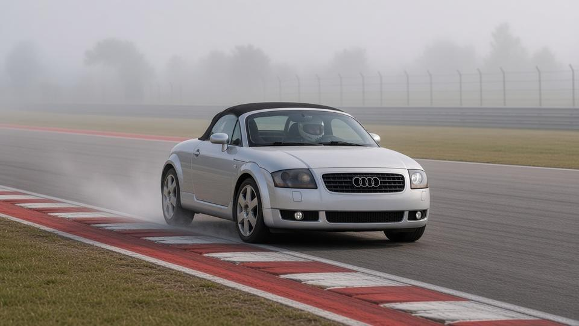
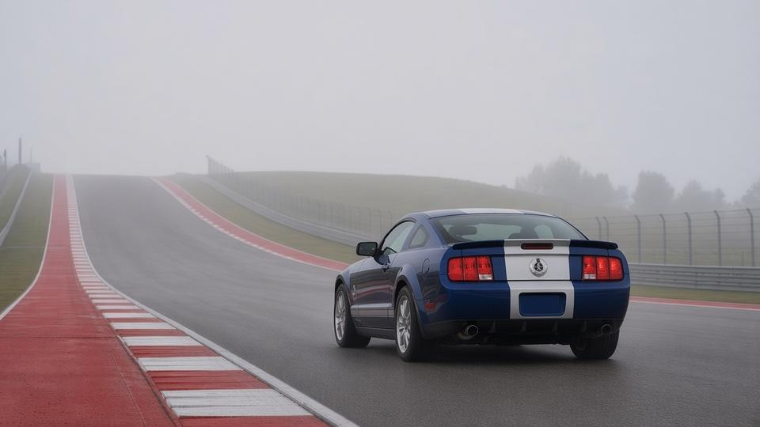
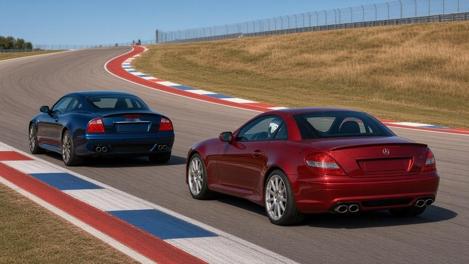

Final results
| Pos | Player | Car | Time | Gap | Pts |
|---|---|---|---|---|---|
| 1 | tarafiiee | Shelby GT500 KR 40th '08 | 14:04.816 | Winner | 10 |
| 2 | notarashi | Maserati GranSport MC Victory '06 | 15:03.857 | +59.041 | 8 |
| 3 | chromeme | Mercedes SLK55 AMG '04 | 15:04.832 | +1:00.016 | 6 |
| 4 | vince_the_1st | Audi TT Roadster '03 | 17:01.808 | +2:56.992 | 4 |
Group-round points: 1st 10, 2nd 8, 3rd 6, 4th 4. A DNF scores 0.
The venue
Weather
| Lap | Conditions |
|---|---|
| Lap 1 | 🌫️ Light fog |
| Lap 2 | 🌫️ Light fog |
| Lap 3 | ☁️ Overcast |
| Lap 4 | ☁️ Overcast |
| Lap 5 | ☀️ Clear and dry |
Starting grid
| # | Player | Car | HP | Torque | Weight | Drive | Factory tires |
|---|---|---|---|---|---|---|---|
| 1 | tarafiiee | Shelby GT500 KR 40th '08 | 540 | 510 lb-ft | 3,905 lb | RWD | Goodyear Eagle F1 Supercar, KR-exclusive compound (255/45ZR18 / 285/40ZR18) on 18x9.5 machined KR wheels |
| 2 | chromeme | Mercedes SLK55 AMG '04 | 355 | 376 lb-ft | 3,395 lb | RWD | 225/40ZR18 / 245/35ZR18 Z-rated summer on polished AMG 16-spoke 18-in wheels (7.5J / 8.5J) |
| 3 | vince_the_1st | Audi TT Roadster '03 | 225 | 207 lb-ft | 3,472 lb | AWD | 225/45ZR17 all round on standard 17x7.5 six-spoke alloys (US 225 quattro; 18-in optional) |
| 4 | notarashi | Maserati GranSport MC Victory '06 | 400 | 333 lb-ft | 3,704 lb | RWD | Pirelli P Zero Rosso (235/35ZR19 / 265/30ZR19) |
Grid drawn at random. Everyone races their Pick 1 car.
Build-up
Race 2 is at the Circuit of the Americas in Austin, Texas: 3.43 miles and 20 turns, from the steep climb to Turn 1 through the esses to the long back straight and the Turn 12 hairpin. Five laps.
tarafiiee has pole, with chromeme alongside, vince_the_1st 3rd and notarashi last. Light fog hangs over the track for the first two laps, it lifts to grey skies for laps 3 and 4, and the sun comes out for the last lap.
Lap by lap
Lap 1

Pole-sitter tarafiiee leads by 12.6s. notarashi goes from last to 2nd, 2.8s ahead of chromeme. vince_the_1st misses his braking point at Turn 12 in the fog and loses 4.9s, and he's 44.2s back.
| Pos | Player | Car |
|---|---|---|
| 1 | tarafiiee | Shelby GT500 KR 40th '08 |
| 2 ▲2 | notarashi | Maserati GranSport MC Victory '06 |
| 3 ▼1 | chromeme | Mercedes SLK55 AMG '04 |
| 4 ▼1 | vince_the_1st | Audi TT Roadster '03 |
Lap 2

tarafiiee laps in 2:58.6 in the fog and leads by 24.4s. chromeme is 6.7s behind notarashi.
| Pos | Player | Car |
|---|---|---|
| 1 | tarafiiee | Shelby GT500 KR 40th '08 |
| 2 | notarashi | Maserati GranSport MC Victory '06 |
| 3 | chromeme | Mercedes SLK55 AMG '04 |
| 4 | vince_the_1st | Audi TT Roadster '03 |
Laps 3–4
The fog lifts and lap times drop by 13–21s. chromeme is the quicker of the two and closes to 3.9s behind notarashi.
| Pos | Player | Car |
|---|---|---|
| 1 | tarafiiee | Shelby GT500 KR 40th '08 |
| 2 | notarashi | Maserati GranSport MC Victory '06 |
| 3 | chromeme | Mercedes SLK55 AMG '04 |
| 4 | vince_the_1st | Audi TT Roadster '03 |
Lap 5

The sun comes out. tarafiiee sets the fastest lap, a 2:39.7, and wins by 59.0s. chromeme laps in 2:49.5 but comes up 1.0s short of notarashi, who holds 2nd. vince_the_1st is 4th, 2:57.0 back.
| Pos | Player | Car |
|---|---|---|
| 1 | tarafiiee | Shelby GT500 KR 40th '08 |
| 2 | notarashi | Maserati GranSport MC Victory '06 |
| 3 | chromeme | Mercedes SLK55 AMG '04 |
| 4 | vince_the_1st | Audi TT Roadster '03 |
tarafiiee wins Group 5 Pick 1 Race 2 at Circuit of the Americas in the Shelby GT500 KR 40th '08, 14:04.816 for 5 laps, 59.041 s ahead of notarashi.
Points: 1. tarafiiee (10 pts), 2. notarashi (8 pts), 3. chromeme (6 pts), 4. vince_the_1st (4 pts).
No DNFs: all four cars finished.
Fastest lap: tarafiiee, 2:39.692 on lap 5.
Lap times
| Player | Car | L1 | L2 | L3 | L4 | L5 | Incidents |
|---|---|---|---|---|---|---|---|
| tarafiiee | Shelby GT500 KR 40th '08 | 2:58.226 | 2:58.627 | 2:45.875 | 2:42.396 | 2:39.692 | Clean |
| notarashi | Maserati GranSport MC Victory '06 | 3:10.797 | 3:10.469 | 2:53.955 | 2:56.214 | 2:52.422 | Clean |
| chromeme | Mercedes SLK55 AMG '04 | 3:13.639 | 3:14.279 | 2:53.708 | 2:53.741 | 2:49.465 | Clean |
| vince_the_1st | Audi TT Roadster '03 | 3:42.409 | 3:29.783 | 3:19.667 | 3:17.214 | 3:12.735 | L1 missed braking point at Turn 12, +4.9 s |